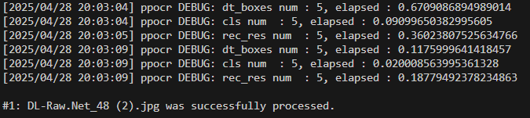
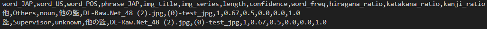

A Data Science Approach to Understanding Language in Baki
Author
Andrew Nemkov
Manga Panel of Hanma Baki.
Motivation & Background
“強くあろうとする姿はかくも美しい”
The short Japanese phrase above translates literally to “That who has a strong frame is beautiful”. In a more general sense, it conveys the idea that one’s body, once properly trained and developed, expresses more beauty than traditional features such as one’s face.
This often complicated and multi-layered idea is a foundational theme in the Japanese comic book style manga of Grappler Baki. In the story, a 17 year old boy by the name of Baki spends countless hours training and developing himself physically and mentally to one day stand in front of his father, the “strongest creature alive”, and challenge him in martial combat.
Grappler Baki is an example of one of today’s few globally recognized Japanese works of visual and textual art that pushes the boundaries to what it means to be masculine. Popular as it is, the work’s origin creates a barrier for those outside of Japan to interact with the manga. As a result of this language gap, the need for this project was born.
Utilizing data science techniques, I aim to bridge this gap in linguistics by analyzing the words used withing Baki’s universe. Utilizing the tools of natural language processing, I seek to provide a deeper understanding of the work’s narrative structure and themes that define Grappler Baki.
Dataset Foundation
To undertake such a difficult task of bridging the gap between my English and the Japanese of Grappler Baki, I first needed to create a proper dataset that would contains all the written content used to describe Baki’s story over a large assortment of Japanese manga panels. For this, I discovered a site known as dl-raw.ac that contained downloadable content on various Japanese manga, broken down by series. In this site, I downloaded pages for the three Baki series of my personal choice: Baki Rahen manga series (see Baki Rahen Page), Baki Dou 2 manga series (see Baki Dou 2 Page), and Hanma Baki manga series (see Hanma Baki Page). In total, the three downloads contained roughly 4000 Japanese manga pages describing various parts of Baki’s life as a fighter.
Validity of dl-raw.ac Website
Some things to note about the website I utilized to get my data:
The site is publicly accessible.
The analysis of this project was performed for non-commercial purposes only.
All source citations were provided.
The data used in this project will not be redistributed.
After gathering the source of my data, I needed a tool that I could use to extract the Japanese text from these images and turn the result into a computer-readable format. For this I utilized Optical Character Recognition (OCR), which would take in a Japanese manga image as input and output extracted Japanese phrases with each having a confidence score for how correctly the model thinks it extracted that portion of text.
For a detailed explanation on the process of using this machine learning, please see below:
Further context is required to better understand the results of my project. In this part, I will explain the basic way that the Japanese writing system functions. In short, the Japanese language is written in a combination of three writing systems: hiragana, katakana, and kanji. Hiragana and katakana are “kana” or system of Japanese alphabet, where one letter represents a sound. Hiragana is used for words originated from Japan, while katakana is used to represent foreign words adapted from outside Japan. On the other hand, kanji represent logographic characters, or ones where a letter represents a concept or idea instead of a sound. For this reason, kanji are more complicated that hiragana and katakana. This basic information will be crucial to understand several of my project’s variables.
Dataset Creation
Setup
To begin an exaplanation of the OCR code used in this project, it is essential to start with the correct python libraries. Almost all were utilized in the data preparation process. Specifically, I used the cv2 python library for file reading and image preprocessing, the re python library for cleaning of words, csv to read my extraction into a dataset, os for file path creation, the gc python library for cleaning memory, the fugashi python library to separate phrases into words, the Counter python library to count word frequency, the PaddleOCR python library to import the proper OCR model, and the Translator python library to translate extracted Japanese words to English.
The data creation process continued with utilizing the above libraries to create a meaninful dataset for analysis. I used figashi to tokenize words as well as identify each word’s part of speech and in addition to this, those words that were not identified into groups were set as “unknown”. I continued by translating my Japanese words into English using Google translate as well as calculating the Japanese ratios of types of characters in each word. Each word was given three ratios for the proportion of hiragana, katakana, and kanji characters in each word.
Further Data Creation Information
Please note an important aspect of the way that more extractions are added to the dataset. Column names are written so that if they currently exist in the dataset, then new ones will not be added, but if a dataset has no headers then the provided will be added before all other information.
In addition, to limit performance issues of the Visual Studio Code application and OCR heavy processing requirement, I added a small amount of code to clean the memory of the process after an image is processed and added to the dataset.
Parameter Tuning
The parameters of the OCR model for this project are just as important as creating the columns of the dataset. Finding the right parameters to use took lots of experimentation, as I kept slightly adjusting the OCR’s rec_batch_num, det_db_box_thresh, det_db_unclip_ratio, rec_max_len, and drop_score. Below I explained these parameters further below:
The rec_batch_num represents the model’s batch size processing parameter that when increased, increases the speed of the machine learning’s processing.
The det_db_box_thresh parameter represents the box detection confidence, which when increased changes the model to only detect more clearer text boxes.
On the other hand, det_db_unclip_ratio when increased makes the model detect more words or symbols.
The rec_max_len parameter is easier to understand, as this simply limits the total length of an extracted phrase.
The final parameter of drop_score limits the maximum score that the OCR model can process and add the dataset, as all phrases extracted with a lower score than the threshold will be discarded.
Features
For final clarity of the visualizations and results of the project, below are simple explanations of all the features of the dataset:
word_JAP: Japanese word from extracted Japanese phrase.
word_US: English word translated from word_JAP.
word_POS: Part of speech for word_JAP.
phrase_JAP: Japanese phrase extracted from Baki manga JPG image.
img_title: Title of Baki manga JPG image.
img_series: Manga series of Baki manga JPG image.
length: Length of word_JAP.
confidence: OCR confidence score of extracted Japanese phrase.
word_freq: Decimal value of how often a particular Japanese word appears in dataset (calculated separately from other data creation steps for simplicity)
hiragana_ratio: Ratio of hiragana characters in word_JAP.
katakana_ratio: Ratio of katakana characters in word_JAP.
kanji_ratio: Ratio of kanji characters in word_JAP.
Example Extraction
Below is a short demonstration of the process of the PaddleOCR model I utilized in my project. The machine learning model is given an image to analyze, it identifies and extracts Japanese text, proper cleaning and calculations are performed with these extracted phrases, and the result is recorded in the dataset.
Step 1: Obtain Image
Below is an example of one of 4000 Japanese manga panels from the Grappler Baki manga. In this specific case, the image comes at the end of a chapter, which is why the right half is black while the left shows drawings and text.
Example Japanese manga panel named DL-Raw.Net_48 (2).jpg.
The process begins with an image input. In this example, I used a image with few words for simplicity titled DL-Raw.Net_48 (2).jpg. The OCR model runs its machine learning algorithm and identifies the Japanese text seen in the bright red box above.
Step 2: Extract Text

Test image python OCR output.
The model takes the identified text and formats it into a computer readable format. After this, the OCR continues to attempt to identify any more text phrases, following the repreating process of identification and transformation in format until no more text can be identified on the image. When this occurs, a numered success message is given in the output, showing the ending of OCR process on the DL-Raw.Net_48 (2).jpg image.
Step 3: Add to Dataset

Test image dataset implementation.
The identified information of the example image is the actual extracted phrase and the model’s confidence of this extraction. These two key pieces are input into a dataset. Following this, my own code performs several steps of further calculations from both the information about the image and the Japanese text that was extracted.
The result of my calculations and further data preparation is seen above with a small dataset including headers, the extraced Japanese phrase of 他の監, and two words of 他 and 監 which were obtained from this phrase from the above example image. It is important to note that the symbol の is read as “no” and serves a grammatical phrase of the role, explaining why there are two words and not three in the example dataset.
Dataset Preprocessing
Code
import pandas as pdimport matplotlib.pyplot as pltimport seaborn as snsimport numpy as npfrom scipy.stats import gaussian_kdefrom matplotlib.colors import LinearSegmentedColormapimport matplotlib.patches as mpatchesimport matplotlib.cm as cmimport matplotlib.colors as mcolorsfrom sklearn.feature_extraction.text import TfidfVectorizerfrom sklearn.decomposition import NMFimport warningsfrom IPython.display import display#----------------------------------------------------------------# dataset namecsv_file =r"C:\Users\andne\OneDrive\Pictures\Capstone1\capstone\(1)-main\(1)-codeAndData\realData.csv"# make dataframe of datadf = pd.read_csv(csv_file)# remove outliers (words longer than 10 characters)df_filtered = df[df["length"] <=10].copy()display(df_filtered.head())
word_JAP
word_US
word_POS
phrase_JAP
img_title
img_series
length
confidence
word_freq
hiragana_ratio
katakana_ratio
kanji_ratio
0
新装
Newly available
noun
新装板
DL-Raw.Net_1 (2).jpg
Hanma_Baki
2
0.65
0.0006
0.0
0.0
1.0
1
板
Board
unknown
新装板
DL-Raw.Net_1 (2).jpg
Hanma_Baki
1
0.65
0.0014
0.0
0.0
1.0
2
板垣
Itagaki
noun
板垣恵介
DL-Raw.Net_1 (2).jpg
Hanma_Baki
2
0.96
0.0043
0.0
0.0
1.0
3
恵介
Keisuke
noun
板垣恵介
DL-Raw.Net_1 (2).jpg
Hanma_Baki
2
0.96
0.0045
0.0
0.0
1.0
4
新装
Newly available
noun
新装板
DL-Raw.Net_1.jpg
Hanma_Baki
2
0.88
0.0006
0.0
0.0
1.0
Figure 0.5: First five rows of dataset.
After successfully choosing an OCR model, performing the necessary setup, and adjusting the model’s parameters, I began my word analysis by importing the necessary python libraries.
Some important ones I mentioned below:
I calculate jittering in scatter plot points using the the gaussian_kde library.
I perform a TF-IDf analysis to obtain importance of words in a dataset using the TfidfVectorizer library.
I perform NMF analysis to group words into distinct themes using the NMF library.
In addition to the standard method of reading in a CSV dataset, I also filtered the data to exclude words longer than 10 characters, as this was clearly an tokenization error. This means some words were not correctly split from their parent phrases and therefore proper word analysis can’t be performed on them. As a result, I cleaned the data to include only single word entries for the main word_JAP column.
OCR Confidence and Word Complexity
The first part of my analysis involved researching the correlations between an OCR model’s confidence and an extracted word’s complexity. In this case complexity considers both the length of the extracted Japanese word as well as the types of Japanese characters that make up this word. Separate analysis of these two simpler relationships can yield significant understanding of what variables most notably decrease an OCR model’s confidence score for a extracted phrase, allowing for better future application of the project.
Word Length Trends
Code
# filter words with more than 15 characterslong_words = df[df["word_JAP"].str.len() >15][["word_JAP", "word_US"]]# print(long_words)#----------------------------------------------------------------# jitter strengthjitter_strength =0.1# Adjust this value as needed# create jittered columnsdf_filtered["jittered_length"] = df_filtered["length"] + np.random.uniform(-jitter_strength, jitter_strength, len(df_filtered))df_filtered["jittered_confidence"] = df_filtered["confidence"] + np.random.uniform(-jitter_strength, jitter_strength, len(df_filtered))#----------------------------------------------------------------# KDE calculation using jittered valuesxy = np.vstack([df_filtered['jittered_length'], df_filtered['jittered_confidence']])kde = gaussian_kde(xy) density = kde(xy) # normalize density valuesnorm_density = (density - np.min(density)) / (np.max(density) - np.min(density))#----------------------------------------------------------------# custom red palette (light red to dark red)custom_reds = LinearSegmentedColormap.from_list("custom_reds", ["#ffa07a", "#f08080", "#ff0000", "#ce2029", "#8b0000"])# question 1 plot 1: scatter plot with density-based coloringplt.figure(figsize=(6.5, 4.5))sns.scatterplot( x=df_filtered["jittered_length"], y=df_filtered["jittered_confidence"], alpha=0.7, hue=norm_density, palette=custom_reds, # Apply custom red gradient edgecolor=None)# Regression linesns.regplot(x=df_filtered["jittered_length"], y=df_filtered["jittered_confidence"], scatter=False, color="red", line_kws={"linewidth": 2})# Set y-axis limit between 0.65 and 1plt.ylim(0.65, 1)plt.xlabel("Word Length")plt.ylabel("OCR Confidence")# plt.title("Scatter Plot: OCR Confidence vs. Word Length (With Jitter & Density Coloring)")legend_labels = [ mpatches.Patch(color="#8b0000", label="Very High Density"), mpatches.Patch(color="#ce2029", label="High Density"), mpatches.Patch(color="#ff0000", label="Medium Density"), mpatches.Patch(color="#f08080", label="Low Density"), mpatches.Patch(color="#ffa07a", label="Very Low Density"),]plt.legend(handles=legend_labels, title="Density", loc="lower right")plt.show()
Figure 1.1: Scatter plot showing relationship between OCR confidence and word length.
Analysis of the relationship between OCR confidence and word complexity begins by understanding the relationship between confidence and word length. I originally speculated that longer words are inherently more complex, therefore it would be more difficult for the model to extract them.
To test this theory I wrote a scatter plot depicting the correlation between word length and OCR confidence. The original result was poorly visualized, so I implemented jittering of the scatterplot points for minimum variety of spacing, as well as added custom labels for five levels of density of points ranging from “Very High Density” to “Very Low Density”. These labels were used to color the points in the graph, with darker red representing higher density and lighter red representing lower density. One final addition to the graphic was the use of a line-of-best-fit to help point the relationship between the two variables.
The results of these adjustments are seen above in figure 1.1, where the features of word length and OCR confidence is positive (unlike my original guess of the relationship being negative). This means that as a Japanese word’s length increases, the chance of it being extracted with higher OCR confidence increases. This result may be explained by the nature of how Japanese words are written, as words written with more complicated characters tend to often be shorter than those written with simpler characters.
OCR Confidence by Character Type
Code
# hide warnings for readabilitywith warnings.catch_warnings(): warnings.simplefilter("ignore")# function to find dominant character typedef classify_character_type(row): max_ratio =max(row["hiragana_ratio"], row["katakana_ratio"], row["kanji_ratio"])if max_ratio == row["kanji_ratio"]:return"Kanji"elif max_ratio == row["katakana_ratio"]:return"Katakana"else:return"Hiragana"# apply classification df_filtered["char_type"] = df_filtered.apply(classify_character_type, axis=1)# question 1 plot 2: box plot plt.figure(figsize=(7.5, 5.5)) sns.boxplot( x="char_type", y="confidence", data=df_filtered, palette="Reds", whiskerprops=dict(color="black"), # whiskers capprops=dict(color="black"), # caps medianprops=dict(color="black") # median line ) plt.xlabel("Dominant Character Type") plt.ylabel("OCR Confidence")# plt.title("Box Plot: OCR Confidence vs. Japanese Character Type") plt.show()
Figure 1.2: Box plot showing relationship between OCR confidence and Japanese writing systems.
The above visualization of figure 1.2 shows a box plot that shows the relationship between OCR confidence and the three types of Japanese writing systems. The graphics shows that model confidence for hiragana dominant Japanese words is higher than for katakana and kanji dominant Japanese words. This result explains that more complicated letters such as katakana and kanji are more difficult for the OCR model to process and extract compared to simpler hiragana letters.
Combined Insights
Code
# use only relevant numerical columnscorrelation_data = df_filtered[["confidence", "length", "hiragana_ratio", "katakana_ratio", "kanji_ratio"]]# correlation matrixcorr_matrix = correlation_data.corr()# question 1 plot 3: heatmapplt.figure(figsize=(7, 5))sns.heatmap( corr_matrix, annot=True, # show correlation values cmap="Reds", fmt=".2f", # format numbers to 2 decimal places linewidths=0.5, # add lines between cells for clarity vmin=-1, vmax=1# ensure consistent color scaling)# tilt x axis namesplt.xticks(rotation=45, ha="right", rotation_mode="anchor", x=0.1)# plt.title("Heatmap: Correlation of Word Characteristics")plt.show()
Figure 1.3: Heatmap showing correlation of word characteristics.
The figure 1.3 above is a heatmap that summarizes the findings of the previous two visualizations (figure 1.1 and figure 1.2). It shows the relationships between the features of OCR confidence, word length, the ratio of hiragana in a Japanese word, the ratio of katakana in a Japanese word, and the ratio of kanji in a Japanese word. From the graph, it is clear that an OCR model’s confidence score correlates positively with word length and hiragana ratio in a word, meaning that as a word’s length increases and/or hiragana ratio increases, then the confidence by which it was extracted with also increases. On the other hand, an OCR model’s confidence score correlates negatively with katakana ratio and kanji ratio of Japanese words, meaning that as the katakana ratio and/or kanji ratio of characters in a Japanese word increases, then the confidence by which this word was extracted by the model decreases. This result explains that the OCR model poorly performs on words with complex letters rather than longer words.
Language Characteristics and Story Telling
To better understand the use of language in Grappler Baki, I continued my analysis on the grammatical and linguistic characteristics of words in the manga work. To simplify I performed analysis to see what information I can find regarding the frequency of used words, parts of speech, and in general the importance of word usage. This side of my project also delves more into understanding the themes present in Grappler Baki.
Word Frequency Snapshot
Code
# list of useless words to filter outstopwords = {"the", "a", "an", "and", "or", "but", "if", "so", "because","in", "on", "at", "to", "from", "with", "by", "about", "of","is", "are", "was", "were", "be", "being", "been", "am","have", "has", "had", "do", "does", "did", "can", "could","will", "would", "shall", "should", "must", "may", "might","this", "that", "these", "those", "there", "here", "where","when", "how", "say", "said", "tell", "told", "see", "saw","look", "looked", "come", "go", "went", "take", "took","make", "made", "get", "got", "know", "knew", "think","thought", "want", "wanted", "like", "liked", "need","needed", "use", "used", "find", "found", "give", "gave","work", "works", "working", "try", "tried", "ask", "asked","good", "bad", "better", "best", "worst", "big", "small","little", "huge", "tiny", "old", "new", "young", "great","nice", "mean", "strong", "weak", "happy", "sad","I", "me", "my", "mine", "you", "your", "yours","he", "him", "his", "she", "her", "hers", "it", "its","we", "us", "our", "ours", "they", "them", "their", "theirs","yes", "no", "maybe", "okay", "really", "very", "just", "even", "still", "yet","oh", "uh", "um", "hmm", "ah", "haha", "lol", "hmm", "what","it", "the", "not", "is", "no", "of"}#----------------------------------------------------------------# hide warnings for readabilitywith warnings.catch_warnings(): warnings.simplefilter("ignore")# custom red color range custom_reds = ["#ffa07a", "#ff4c4c", "#d60000", "#a00000", "#600000"]# filter for nouns only df_word_freq1 = df[df["word_POS"] =="noun"]# remove words with spaces or numbers df_word_freq1 = df_word_freq1[~df_word_freq1["word_US"].str.contains(r"\s|\d", na=False, regex=True)]# filter out not significant words df_word_freq1 = df_word_freq1[~df_word_freq1["word_US"].isin(stopwords)]# total occurrences of words per series word_counts = df_word_freq1.groupby(["img_series", "word_US"])["word_US"].count().reset_index(name="word_count")# sort by frequency for each series (top 50) top_n =50 word_counts_top = word_counts.sort_values(by="word_count", ascending=False).groupby("img_series").head(top_n)# get global min and max global_min = word_counts_top["word_count"].min() global_max = word_counts_top["word_count"].max()# function to map word count to the custom red color rangedef map_to_custom_reds(value, vmin, vmax): norm_value = (value - vmin) / (vmax - vmin) color_index =int(norm_value * (len(custom_reds) -1))return custom_reds[color_index]# question 2 plot 1: bar graphs fig, axes = plt.subplots(1, 3, figsize=(11, 11))# loop over each series and create individual bar plotsfor idx, series inenumerate(word_counts_top['img_series'].unique()): ax = axes[idx] data = word_counts_top[word_counts_top["img_series"] == series] max_value = data["word_count"].max() bar_colors = [map_to_custom_reds(value, global_min, global_max) for value in data["word_count"]] bars = sns.barplot( x="word_count", y="word_US", data=data, ax=ax, palette=bar_colors )# black edge color of barsfor bar in bars.patches: bar.set_edgecolor("black") bar.set_linewidth(1)# word frquency inside each barfor i, value inenumerate(data["word_count"]): text_color ="white"if series =="Baki Dou 2"and value == max_value else"black" ax.text(value /2, i, str(value), ha='center', va='center', fontsize=8, color=text_color, fontweight="bold")# titling adjusted_series = series.replace("Hanma_Baki", "Hanma Baki") title =f"{adjusted_series} Series" ax.set_title(title, fontweight='normal')# y-axisif idx ==0: ax.set_ylabel("Word (English)", fontweight='bold')if idx ==1: ax.set_ylabel("Word (English)", fontweight='bold')if idx ==2: ax.set_ylabel("Word (English)", fontweight='bold')# x-axisif idx ==0: ax.set_xlabel("Word Frequency", fontweight='bold')if idx ==1: ax.set_xlabel("Word Frequency", fontweight='bold')if idx ==2: ax.set_xlabel("Word Frequency", fontweight='bold')# remove y-axis labelsif idx ==1: ax.set_ylabel('')if idx ==2: ax.set_ylabel('') ax.set_xlim(0, data["word_count"].max()) plt.tight_layout() plt.show()
Figure 2.1: Bar graph showing top 50 most frequent nouns across three Baki manga series.
To better understand the impact of themes on the story of Baki, I decided to visualize the most common nouns present across all three manga series in the form of a combined bar graph. I began by cleaning my dataset to get a fair result of my visualization. The three main tasks of this are shown below:
Stopword Removal: I removed the dataset of “stopwords”. An example of a common stopword is “the” or “be”. They are called this because they “stop” or are excluded in almost all natural language processing. They provide no significant meaning and appear very frequently, potentially swaying the results of word analysis if they are not filtered out. In the beginning of the code section above, I show a large list of common stopwords I excluded from my dataset for this graph.
Additional Cleaning: I continued by filtering my dataframe to only include nouns, since these will provide me with the most amount of context and meaninful information to understand the themes of the manga work. I also removed words with spacing or numbers, as these can cause issues for proper visualization.
After performing the above cleaning, I put together my combined bar graphic of figure 2.1 above showning the 50 most common nouns in each manga series of Baki Dou 2, Baki Rahen, and Hanma Baki (graphs follow same order of left to right). For easier readability, the graphs were all colored by a set of 5 red colors, with darker red representing more frequency of a word and lighter red representing less frequency of a word.
The results of this graph are really interesting in that the word “Baki”, the name of the main character in Grappler Baki, is one of the most common nouns in all three series. In addition, words such as “Sumo”, “body”, “fighting”, “strongest”, “warrior”, “death”, and “man” all clearly represent the themes that the story of Grappler Baki explores. This relationship shows that the manga is character-centric, as they play an important role in the Baki story.
Parts of Speech Distribution
Code
# filter dataset & remove nullsdf_filtered4 = df.dropna(subset=["word_POS", "img_series"])# count occurrences of each POS per seriespos_counts = df_filtered4.groupby(["img_series", "word_POS"])["word_POS"].count().reset_index(name="count")# pivot table for stacked bar formatpos_pivot = pos_counts.pivot(index="img_series", columns="word_POS", values="count").fillna(0)# calculate total words in each seriestotal_words_per_series = pos_pivot.sum(axis=1)# normalize each part of speech count by total words in the seriespos_pivot_normalized = pos_pivot.div(total_words_per_series, axis=0)# create subplotsfig, axes = plt.subplots(1, 3, figsize=(11, 11), sharey=True)# question 2 plot 2: bar graphsfor idx, series inenumerate(pos_pivot_normalized.index): ax = axes[idx] data = pos_pivot_normalized.loc[series].sort_values(ascending=False) # sort by proportion data.plot(kind="bar", stacked=True, color="red", edgecolor="black", linewidth=1, ax=ax) ax.set_xticklabels(ax.get_xticklabels(), rotation=45, ha="right") adjusted_series = series.replace("Hanma_Baki", "Hanma Baki") ax.set_title(f"{adjusted_series} Series", fontweight="normal") ax.set_xlabel("Parts of Speech", fontweight="bold") ax.set_ylabel("Proportion", fontweight="bold")plt.tight_layout()plt.show()
Figure 2.2: Bar graph of normalized distributions of POS across three Baki manga series.
I continued my thematic analysis of Baki by visualizing another bar graph of figure 2.2. This one differs from figure 2.1 in that it visulizes the normalized distribution of parts of speech across the three Baki series used in my dataset. Normalized means adjusting to take into consideration of the proportion of parts of speech across series instead of just total number of occurrences.
The result of the above figure surprised me greatly, as the distribution of parts of speech across the series is nearly identical, with nouns, unknown, and verbs dominating the total proportion. This means that the way that Grappler Baki is written has not changed over the past 20 years of these manga series being published. This also shows that the story of Baki hasn’t changed its direction and themes and follows the same general pattern of story-telling.
TF-IDF Insights
Code
# hide warnings for readabilitywith warnings.catch_warnings(): warnings.simplefilter("ignore")# convert stopwords set to list stopwords_list =list(stopwords)# filter dataset & remove nulls df_filtered_tfidf = df.dropna(subset=["word_US", "img_series"])# only nouns df_filtered_tfidf = df_filtered_tfidf[df_filtered_tfidf["word_POS"] =="noun"]# remove stopwords from "word_US" column df_filtered_tfidf = df_filtered_tfidf[~df_filtered_tfidf["word_US"].isin(stopwords_list)]# put all words into a single document per series series_documents = df_filtered_tfidf.groupby("img_series")["word_US"].apply(lambda x: ' '.join(x)).reset_index()# TF-IDF vectorizer setup with custom stopwords vectorizer = TfidfVectorizer(max_features=300, stop_words=stopwords_list) tfidf_matrix = vectorizer.fit_transform(series_documents["word_US"])# matrix to dataFrame tfidf_df = pd.DataFrame(tfidf_matrix.toarray(), index=series_documents["img_series"], columns=vectorizer.get_feature_names_out())# top 20 highest TF-IDF words per series top_n =20 top_words_per_series = {}for series in tfidf_df.index: top_words = tfidf_df.loc[series].nlargest(top_n) top_words_per_series[series] = top_words# colors cmap = plt.cm.Reds norm = mcolors.Normalize(vmin=0, vmax=1) # Normalize between 0 and 1 for the color map# question 2 plot 3: TF-IDF fig, axes = plt.subplots(1, 3, figsize=(11, 11))for idx, (series, words) inenumerate(top_words_per_series.items()): ax = axes[idx]# normalize TF-IDF values for each word to create color gradient normalized_values = (words.values - words.values.min()) / (words.values.max() - words.values.min()) colors = [cmap(norm(val)) for val in normalized_values] sns.barplot(x=words.values, y=words.index, ax=ax, palette=colors, edgecolor="black") ax.set_title(f"{series} Series") ax.set_xlabel("TF-IDF Score") ax.set_ylabel("Word (English)")# x-axis labelif idx ==1: ax.set_xlabel("TF-IDF Score", fontweight="bold")# y-axis labelif idx ==0: ax.set_ylabel("Word (English)", fontweight="bold")# remove x-axis# if idx == 0:# ax.set_xlabel('')# if idx == 2:# ax.set_xlabel('')# remove y-axis labelsif idx ==1: ax.set_ylabel('')if idx ==2: ax.set_ylabel('')# set x-axis ticks to intervals of 0.15 ax.set_xticks([i *0.15for i inrange(int(words.values.max() //0.15) +1)]) plt.tight_layout() plt.show()
Figure 2.3: Bar graph top 20 most important words across three Baki manga series.
The final visualization of figure 2.3 shows the results of TF-IDF analysis on the dataset in a combined bar graph format. The term when written out fully reads as term frequency-inverse document frequency and this is a technique in data analysis to measure the importance of words in a given document. During this process, a certain weight is applied to each word in a given dataset, meaning “heavier” words hold more meaning while “lighter” words hold less meaning. Weight of a word decreases by how frequently it appears in the overall word list. In general TF-IDF highlights words that are distinctive rather than common.
In the above visualization of the top 20 most important words in each Baki series, the bars are colored with a red hue that decreases in intensity depending on TF-IDF score. The graph shows a similarity to the result in figure 2.1 of the most common nouns in all three Baki manga series. Names and words relating to the themes of the Grappler Baki story are shown, representing that characters are central to the story of Baki.
Conclusion
The Grappler Baki manga maintains a consistent narrative style, with language reinforcing themes of strength and growth. OCR analysis reveals that writing style complexity negatively affects text extraction accuracy. This project shows how OCR bridges the gap in understanding manga, highlighting the value of combining technology with storytelling.
---title: "Grappler Baki Word Analysis"subtitle: "A Data Science Approach to Understanding Language in Baki"author: "Andrew Nemkov"bibliography: references.bibnocite: | @*number-sections: falseformat: html: theme: default rendering: embed-resources code-fold: true code-tools: true toc: truejupyter: python3---{fig-alt="One of numerous manga panels from the Baki manga."}# Motivation & Background**"強くあろうとする姿はかくも美しい"**The short Japanese phrase above translates literally to "That who has a strong frame is beautiful". In a more general sense, it conveys the idea that one's body, once properly trained and developed, expresses more beauty than traditional features such as one's face.This often complicated and multi-layered idea is a foundational theme in the Japanese comic book style manga of *Grappler Baki*. In the story, a 17 year old boy by the name of Baki spends countless hours training and developing himself physically and mentally to one day stand in front of his father, the "strongest creature alive", and challenge him in martial combat.*Grappler Baki* is an example of one of today's few globally recognized Japanese works of visual and textual art that pushes the boundaries to what it means to be masculine. Popular as it is, the work's origin creates a barrier for those outside of Japan to interact with the manga. As a result of this language gap, the need for this project was born. Utilizing data science techniques, I aim to bridge this gap in linguistics by analyzing the words used withing Baki's universe. Utilizing the tools of natural language processing, I seek to provide a deeper understanding of the work's narrative structure and themes that define *Grappler Baki*.# Dataset FoundationTo undertake such a difficult task of bridging the gap between my English and the Japanese of Grappler Baki, I first needed to create a proper dataset that would contains all the written content used to describe Baki's story over a large assortment of Japanese manga panels. For this, I discovered a site known as [dl-raw.ac](https://dl-raw.ac/) that contained downloadable content on various Japanese manga, broken down by series. In this site, I downloaded pages for the three Baki series of my personal choice: Baki Rahen manga series (see [Baki Rahen Page](https://dl-raw.ac/%e5%88%83%e7%89%99%e3%82%89%e3%81%b8%e3%82%93-raw/)), Baki Dou 2 manga series (see [Baki Dou 2 Page](https://dl-raw.ac/%e5%88%83%e7%89%99%e9%81%93-%e7%ac%ac01-20%e5%b7%bb-baki-dou-vol-01-20/)), and Hanma Baki manga series (see [Hanma Baki Page](https://dl-raw.ac/%e7%af%84%e9%a6%ac%e5%88%83%e7%89%99-hanma-baki/)). In total, the three downloads contained roughly 4000 Japanese manga pages describing various parts of Baki's life as a fighter.::: {.callout-note}## Validity of dl-raw.ac WebsiteSome things to note about the website I utilized to get my data:1. The site is publicly accessible. 2. The analysis of this project was performed for non-commercial purposes only.3. All source citations were provided.4. The data used in this project will not be redistributed.:::After gathering the source of my data, I needed a tool that I could use to extract the Japanese text from these images and turn the result into a computer-readable format. For this I utilized Optical Character Recognition (OCR), which would take in a Japanese manga image as input and output extracted Japanese phrases with each having a confidence score for how correctly the model thinks it extracted that portion of text. For a detailed explanation on the process of using this machine learning, please see below: 1. [GeekForGeeks site OCR explanation](https://www.geeksforgeeks.org/what-is-optical-character-recognition-ocr/) and [IBM site OCR explanation](https://www.ibm.com/think/topics/optical-character-recognition)2. [Documentation of PaddleOCR](https://github.com/PaddlePaddle/PaddleOCR/blob/main/README_en.md)3. [Tutorial Video for PaddleOCR](https://www.youtube.com/watch?v=t5xwQguk9XU)**Japanese Overview**Further context is required to better understand the results of my project. In this part, I will explain the basic way that the Japanese writing system functions. In short, the Japanese language is written in a combination of three writing systems: hiragana, katakana, and kanji. Hiragana and katakana are "kana" or system of Japanese alphabet, where one letter represents a sound. Hiragana is used for words originated from Japan, while katakana is used to represent foreign words adapted from outside Japan. On the other hand, kanji represent logographic characters, or ones where a letter represents a concept or idea instead of a sound. For this reason, kanji are more complicated that hiragana and katakana. This basic information will be crucial to understand several of my project's variables.## Dataset Creation**Setup**To begin an exaplanation of the OCR code used in this project, it is essential to start with the correct python libraries. Almost all were utilized in the data preparation process. Specifically, I used the **cv2** python library for file reading and image preprocessing, the **re** python library for cleaning of words, csv to read my extraction into a dataset, **os** for file path creation, the **gc** python library for cleaning memory, the **fugashi** python library to separate phrases into words, the **Counter** python library to count word frequency, the **PaddleOCR** python library to import the proper OCR model, and the **Translator** python library to translate extracted Japanese words to English.The data creation process continued with utilizing the above libraries to create a meaninful dataset for analysis. I used figashi to tokenize words as well as identify each word's part of speech and in addition to this, those words that were not identified into groups were set as "unknown". I continued by translating my Japanese words into English using Google translate as well as calculating the Japanese ratios of types of characters in each word. Each word was given three ratios for the proportion of hiragana, katakana, and kanji characters in each word.::: {.callout-note}## Further Data Creation InformationPlease note an important aspect of the way that more extractions are added to the dataset. Column names are written so that if they currently exist in the dataset, then new ones will not be added, but if a dataset has no headers then the provided will be added before all other information.In addition, to limit performance issues of the Visual Studio Code application and OCR heavy processing requirement, I added a small amount of code to clean the memory of the process after an image is processed and added to the dataset.:::**Parameter Tuning**The parameters of the OCR model for this project are just as important as creating the columns of the dataset. Finding the right parameters to use took lots of experimentation, as I kept slightly adjusting the OCR's rec_batch_num, det_db_box_thresh, det_db_unclip_ratio, rec_max_len, and drop_score. Below I explained these parameters further below:1. The rec_batch_num represents the model's batch size processing parameter that when increased, increases the speed of the machine learning's processing. 2. The det_db_box_thresh parameter represents the box detection confidence, which when increased changes the model to only detect more clearer text boxes. 3. On the other hand, det_db_unclip_ratio when increased makes the model detect more words or symbols. 4. The rec_max_len parameter is easier to understand, as this simply limits the total length of an extracted phrase. 5. The final parameter of drop_score limits the maximum score that the OCR model can process and add the dataset, as all phrases extracted with a lower score than the threshold will be discarded.**Features**For final clarity of the visualizations and results of the project, below are simple explanations of all the features of the dataset:1. **word_JAP**: Japanese word from extracted Japanese phrase.2. **word_US**: English word translated from word_JAP.3. **word_POS**: Part of speech for word_JAP.4. **phrase_JAP**: Japanese phrase extracted from Baki manga JPG image.5. **img_title**: Title of Baki manga JPG image.6. **img_series**: Manga series of Baki manga JPG image.7. **length**: Length of word_JAP.8. **confidence**: OCR confidence score of extracted Japanese phrase.9. **word_freq**: Decimal value of how often a particular Japanese word appears in dataset (calculated separately from other data creation steps for simplicity)10. **hiragana_ratio**: Ratio of hiragana characters in word_JAP.11. **katakana_ratio**: Ratio of katakana characters in word_JAP.12. **kanji_ratio**: Ratio of kanji characters in word_JAP.# Example ExtractionBelow is a short demonstration of the process of the PaddleOCR model I utilized in my project. The machine learning model is given an image to analyze, it identifies and extracts Japanese text, proper cleaning and calculations are performed with these extracted phrases, and the result is recorded in the dataset.**Step 1: Obtain Image**Below is an example of one of 4000 Japanese manga panels from the Grappler Baki manga. In this specific case, the image comes at the end of a chapter, which is why the right half is black while the left shows drawings and text.{fig-alt="Image showing PaddleOCR identifying text in DL-Raw.Net_48 (2).jpg image."}The process begins with an image input. In this example, I used a image with few words for simplicity titled DL-Raw.Net_48 (2).jpg. The OCR model runs its machine learning algorithm and identifies the Japanese text seen in the bright red box above.**Step 2: Extract Text**{fig-alt="Image showing test run of PaddleOCR code on image named DL-Raw.Net_48 (2).jpg."}The model takes the identified text and formats it into a computer readable format. After this, the OCR continues to attempt to identify any more text phrases, following the repreating process of identification and transformation in format until no more text can be identified on the image. When this occurs, a numered success message is given in the output, showing the ending of OCR process on the DL-Raw.Net_48 (2).jpg image.**Step 3: Add to Dataset**{fig-alt="Image showing extracted information and calculated features obtained by running PaddleOCR on image named DL-Raw.Net_48 (2).jpg."}The identified information of the example image is the actual extracted phrase and the model's confidence of this extraction. These two key pieces are input into a dataset. Following this, my own code performs several steps of further calculations from both the information about the image and the Japanese text that was extracted. The result of my calculations and further data preparation is seen above with a small dataset including headers, the extraced Japanese phrase of 他の監, and two words of 他 and 監 which were obtained from this phrase from the above example image. It is important to note that the symbol の is read as "no" and serves a grammatical phrase of the role, explaining why there are two words and not three in the example dataset. # Dataset Preprocessing ```{python}#| label: First-5-Rows#| fig-cap: "Figure 0.5: First five rows of dataset."import pandas as pdimport matplotlib.pyplot as pltimport seaborn as snsimport numpy as npfrom scipy.stats import gaussian_kdefrom matplotlib.colors import LinearSegmentedColormapimport matplotlib.patches as mpatchesimport matplotlib.cm as cmimport matplotlib.colors as mcolorsfrom sklearn.feature_extraction.text import TfidfVectorizerfrom sklearn.decomposition import NMFimport warningsfrom IPython.display import display#----------------------------------------------------------------# dataset namecsv_file =r"C:\Users\andne\OneDrive\Pictures\Capstone1\capstone\(1)-main\(1)-codeAndData\realData.csv"# make dataframe of datadf = pd.read_csv(csv_file)# remove outliers (words longer than 10 characters)df_filtered = df[df["length"] <=10].copy()display(df_filtered.head())```After successfully choosing an OCR model, performing the necessary setup, and adjusting the model's parameters, I began my word analysis by importing the necessary python libraries. Some important ones I mentioned below:1. I calculate jittering in scatter plot points using the the **gaussian_kde** library.2. I perform a TF-IDf analysis to obtain importance of words in a dataset using the **TfidfVectorizer** library.3. I perform NMF analysis to group words into distinct themes using the **NMF** library.In addition to the standard method of reading in a CSV dataset, I also filtered the data to exclude words longer than 10 characters, as this was clearly an tokenization error. This means some words were not correctly split from their parent phrases and therefore proper word analysis can't be performed on them. As a result, I cleaned the data to include only single word entries for the main word_JAP column.# OCR Confidence and Word ComplexityThe first part of my analysis involved researching the correlations between an OCR model's confidence and an extracted word's complexity. In this case complexity considers both the length of the extracted Japanese word as well as the types of Japanese characters that make up this word. Separate analysis of these two simpler relationships can yield significant understanding of what variables most notably decrease an OCR model's confidence score for a extracted phrase, allowing for better future application of the project.## Word Length Trends```{python}#| label: Q1-scatter#| fig-cap: "Figure 1.1: Scatter plot showing relationship between OCR confidence and word length."# filter words with more than 15 characterslong_words = df[df["word_JAP"].str.len() >15][["word_JAP", "word_US"]]# print(long_words)#----------------------------------------------------------------# jitter strengthjitter_strength =0.1# Adjust this value as needed# create jittered columnsdf_filtered["jittered_length"] = df_filtered["length"] + np.random.uniform(-jitter_strength, jitter_strength, len(df_filtered))df_filtered["jittered_confidence"] = df_filtered["confidence"] + np.random.uniform(-jitter_strength, jitter_strength, len(df_filtered))#----------------------------------------------------------------# KDE calculation using jittered valuesxy = np.vstack([df_filtered['jittered_length'], df_filtered['jittered_confidence']])kde = gaussian_kde(xy) density = kde(xy) # normalize density valuesnorm_density = (density - np.min(density)) / (np.max(density) - np.min(density))#----------------------------------------------------------------# custom red palette (light red to dark red)custom_reds = LinearSegmentedColormap.from_list("custom_reds", ["#ffa07a", "#f08080", "#ff0000", "#ce2029", "#8b0000"])# question 1 plot 1: scatter plot with density-based coloringplt.figure(figsize=(6.5, 4.5))sns.scatterplot( x=df_filtered["jittered_length"], y=df_filtered["jittered_confidence"], alpha=0.7, hue=norm_density, palette=custom_reds, # Apply custom red gradient edgecolor=None)# Regression linesns.regplot(x=df_filtered["jittered_length"], y=df_filtered["jittered_confidence"], scatter=False, color="red", line_kws={"linewidth": 2})# Set y-axis limit between 0.65 and 1plt.ylim(0.65, 1)plt.xlabel("Word Length")plt.ylabel("OCR Confidence")# plt.title("Scatter Plot: OCR Confidence vs. Word Length (With Jitter & Density Coloring)")legend_labels = [ mpatches.Patch(color="#8b0000", label="Very High Density"), mpatches.Patch(color="#ce2029", label="High Density"), mpatches.Patch(color="#ff0000", label="Medium Density"), mpatches.Patch(color="#f08080", label="Low Density"), mpatches.Patch(color="#ffa07a", label="Very Low Density"),]plt.legend(handles=legend_labels, title="Density", loc="lower right")plt.show()```Analysis of the relationship between OCR confidence and word complexity begins by understanding the relationship between confidence and word length. I originally speculated that longer words are inherently more complex, therefore it would be more difficult for the model to extract them. To test this theory I wrote a scatter plot depicting the correlation between word length and OCR confidence. The original result was poorly visualized, so I implemented jittering of the scatterplot points for minimum variety of spacing, as well as added custom labels for five levels of density of points ranging from "Very High Density" to "Very Low Density". These labels were used to color the points in the graph, with darker red representing higher density and lighter red representing lower density. One final addition to the graphic was the use of a line-of-best-fit to help point the relationship between the two variables.The results of these adjustments are seen above in figure 1.1, where the features of word length and OCR confidence is positive (unlike my original guess of the relationship being negative). This means that as a Japanese word's length increases, the chance of it being extracted with higher OCR confidence increases. This result may be explained by the nature of how Japanese words are written, as words written with more complicated characters tend to often be shorter than those written with simpler characters.## OCR Confidence by Character Type```{python}#| label: Q1-box#| fig-cap: "Figure 1.2: Box plot showing relationship between OCR confidence and Japanese writing systems."# hide warnings for readabilitywith warnings.catch_warnings(): warnings.simplefilter("ignore")# function to find dominant character typedef classify_character_type(row): max_ratio =max(row["hiragana_ratio"], row["katakana_ratio"], row["kanji_ratio"])if max_ratio == row["kanji_ratio"]:return"Kanji"elif max_ratio == row["katakana_ratio"]:return"Katakana"else:return"Hiragana"# apply classification df_filtered["char_type"] = df_filtered.apply(classify_character_type, axis=1)# question 1 plot 2: box plot plt.figure(figsize=(7.5, 5.5)) sns.boxplot( x="char_type", y="confidence", data=df_filtered, palette="Reds", whiskerprops=dict(color="black"), # whiskers capprops=dict(color="black"), # caps medianprops=dict(color="black") # median line ) plt.xlabel("Dominant Character Type") plt.ylabel("OCR Confidence")# plt.title("Box Plot: OCR Confidence vs. Japanese Character Type") plt.show()```The above visualization of figure 1.2 shows a box plot that shows the relationship between OCR confidence and the three types of Japanese writing systems. The graphics shows that model confidence for hiragana dominant Japanese words is higher than for katakana and kanji dominant Japanese words. This result explains that more complicated letters such as katakana and kanji are more difficult for the OCR model to process and extract compared to simpler hiragana letters.## Combined Insights```{python}#| label: Q1-heat#| fig-cap: "Figure 1.3: Heatmap showing correlation of word characteristics."# use only relevant numerical columnscorrelation_data = df_filtered[["confidence", "length", "hiragana_ratio", "katakana_ratio", "kanji_ratio"]]# correlation matrixcorr_matrix = correlation_data.corr()# question 1 plot 3: heatmapplt.figure(figsize=(7, 5))sns.heatmap( corr_matrix, annot=True, # show correlation values cmap="Reds", fmt=".2f", # format numbers to 2 decimal places linewidths=0.5, # add lines between cells for clarity vmin=-1, vmax=1# ensure consistent color scaling)# tilt x axis namesplt.xticks(rotation=45, ha="right", rotation_mode="anchor", x=0.1)# plt.title("Heatmap: Correlation of Word Characteristics")plt.show()```The figure 1.3 above is a heatmap that summarizes the findings of the previous two visualizations (figure 1.1 and figure 1.2). It shows the relationships between the features of OCR confidence, word length, the ratio of hiragana in a Japanese word, the ratio of katakana in a Japanese word, and the ratio of kanji in a Japanese word. From the graph, it is clear that an OCR model's confidence score correlates positively with word length and hiragana ratio in a word, meaning that as a word's length increases and/or hiragana ratio increases, then the confidence by which it was extracted with also increases. On the other hand, an OCR model's confidence score correlates negatively with katakana ratio and kanji ratio of Japanese words, meaning that as the katakana ratio and/or kanji ratio of characters in a Japanese word increases, then the confidence by which this word was extracted by the model decreases. This result explains that the OCR model poorly performs on words with complex letters rather than longer words.# Language Characteristics and Story TellingTo better understand the use of language in Grappler Baki, I continued my analysis on the grammatical and linguistic characteristics of words in the manga work. To simplify I performed analysis to see what information I can find regarding the frequency of used words, parts of speech, and in general the importance of word usage. This side of my project also delves more into understanding the themes present in *Grappler Baki*.## Word Frequency Snapshot```{python}#| label: Q2-bar1#| fig-cap: "Figure 2.1: Bar graph showing top 50 most frequent nouns across three Baki manga series."# list of useless words to filter outstopwords = {"the", "a", "an", "and", "or", "but", "if", "so", "because","in", "on", "at", "to", "from", "with", "by", "about", "of","is", "are", "was", "were", "be", "being", "been", "am","have", "has", "had", "do", "does", "did", "can", "could","will", "would", "shall", "should", "must", "may", "might","this", "that", "these", "those", "there", "here", "where","when", "how", "say", "said", "tell", "told", "see", "saw","look", "looked", "come", "go", "went", "take", "took","make", "made", "get", "got", "know", "knew", "think","thought", "want", "wanted", "like", "liked", "need","needed", "use", "used", "find", "found", "give", "gave","work", "works", "working", "try", "tried", "ask", "asked","good", "bad", "better", "best", "worst", "big", "small","little", "huge", "tiny", "old", "new", "young", "great","nice", "mean", "strong", "weak", "happy", "sad","I", "me", "my", "mine", "you", "your", "yours","he", "him", "his", "she", "her", "hers", "it", "its","we", "us", "our", "ours", "they", "them", "their", "theirs","yes", "no", "maybe", "okay", "really", "very", "just", "even", "still", "yet","oh", "uh", "um", "hmm", "ah", "haha", "lol", "hmm", "what","it", "the", "not", "is", "no", "of"}#----------------------------------------------------------------# hide warnings for readabilitywith warnings.catch_warnings(): warnings.simplefilter("ignore")# custom red color range custom_reds = ["#ffa07a", "#ff4c4c", "#d60000", "#a00000", "#600000"]# filter for nouns only df_word_freq1 = df[df["word_POS"] =="noun"]# remove words with spaces or numbers df_word_freq1 = df_word_freq1[~df_word_freq1["word_US"].str.contains(r"\s|\d", na=False, regex=True)]# filter out not significant words df_word_freq1 = df_word_freq1[~df_word_freq1["word_US"].isin(stopwords)]# total occurrences of words per series word_counts = df_word_freq1.groupby(["img_series", "word_US"])["word_US"].count().reset_index(name="word_count")# sort by frequency for each series (top 50) top_n =50 word_counts_top = word_counts.sort_values(by="word_count", ascending=False).groupby("img_series").head(top_n)# get global min and max global_min = word_counts_top["word_count"].min() global_max = word_counts_top["word_count"].max()# function to map word count to the custom red color rangedef map_to_custom_reds(value, vmin, vmax): norm_value = (value - vmin) / (vmax - vmin) color_index =int(norm_value * (len(custom_reds) -1))return custom_reds[color_index]# question 2 plot 1: bar graphs fig, axes = plt.subplots(1, 3, figsize=(11, 11))# loop over each series and create individual bar plotsfor idx, series inenumerate(word_counts_top['img_series'].unique()): ax = axes[idx] data = word_counts_top[word_counts_top["img_series"] == series] max_value = data["word_count"].max() bar_colors = [map_to_custom_reds(value, global_min, global_max) for value in data["word_count"]] bars = sns.barplot( x="word_count", y="word_US", data=data, ax=ax, palette=bar_colors )# black edge color of barsfor bar in bars.patches: bar.set_edgecolor("black") bar.set_linewidth(1)# word frquency inside each barfor i, value inenumerate(data["word_count"]): text_color ="white"if series =="Baki Dou 2"and value == max_value else"black" ax.text(value /2, i, str(value), ha='center', va='center', fontsize=8, color=text_color, fontweight="bold")# titling adjusted_series = series.replace("Hanma_Baki", "Hanma Baki") title =f"{adjusted_series} Series" ax.set_title(title, fontweight='normal')# y-axisif idx ==0: ax.set_ylabel("Word (English)", fontweight='bold')if idx ==1: ax.set_ylabel("Word (English)", fontweight='bold')if idx ==2: ax.set_ylabel("Word (English)", fontweight='bold')# x-axisif idx ==0: ax.set_xlabel("Word Frequency", fontweight='bold')if idx ==1: ax.set_xlabel("Word Frequency", fontweight='bold')if idx ==2: ax.set_xlabel("Word Frequency", fontweight='bold')# remove y-axis labelsif idx ==1: ax.set_ylabel('')if idx ==2: ax.set_ylabel('') ax.set_xlim(0, data["word_count"].max()) plt.tight_layout() plt.show()```To better understand the impact of themes on the story of Baki, I decided to visualize the most common nouns present across all three manga series in the form of a combined bar graph. I began by cleaning my dataset to get a fair result of my visualization. The three main tasks of this are shown below:**Stopword Removal:** I removed the dataset of "stopwords". An example of a common stopword is "the" or "be". They are called this because they "stop" or are excluded in almost all natural language processing. They provide no significant meaning and appear very frequently, potentially swaying the results of word analysis if they are not filtered out. In the beginning of the code section above, I show a large list of common stopwords I excluded from my dataset for this graph.**Additional Cleaning:** I continued by filtering my dataframe to only include nouns, since these will provide me with the most amount of context and meaninful information to understand the themes of the manga work. I also removed words with spacing or numbers, as these can cause issues for proper visualization.After performing the above cleaning, I put together my combined bar graphic of figure 2.1 above showning the 50 most common nouns in each manga series of Baki Dou 2, Baki Rahen, and Hanma Baki (graphs follow same order of left to right). For easier readability, the graphs were all colored by a set of 5 red colors, with darker red representing more frequency of a word and lighter red representing less frequency of a word.The results of this graph are really interesting in that the word "Baki", the name of the main character in *Grappler Baki*, is one of the most common nouns in all three series. In addition, words such as "Sumo", "body", "fighting", "strongest", "warrior", "death", and "man" all clearly represent the themes that the story of Grappler Baki explores. This relationship shows that the manga is character-centric, as they play an important role in the Baki story.## Parts of Speech Distribution```{python}#| label: Q2-bar2#| fig-cap: "Figure 2.2: Bar graph of normalized distributions of POS across three Baki manga series."# filter dataset & remove nullsdf_filtered4 = df.dropna(subset=["word_POS", "img_series"])# count occurrences of each POS per seriespos_counts = df_filtered4.groupby(["img_series", "word_POS"])["word_POS"].count().reset_index(name="count")# pivot table for stacked bar formatpos_pivot = pos_counts.pivot(index="img_series", columns="word_POS", values="count").fillna(0)# calculate total words in each seriestotal_words_per_series = pos_pivot.sum(axis=1)# normalize each part of speech count by total words in the seriespos_pivot_normalized = pos_pivot.div(total_words_per_series, axis=0)# create subplotsfig, axes = plt.subplots(1, 3, figsize=(11, 11), sharey=True)# question 2 plot 2: bar graphsfor idx, series inenumerate(pos_pivot_normalized.index): ax = axes[idx] data = pos_pivot_normalized.loc[series].sort_values(ascending=False) # sort by proportion data.plot(kind="bar", stacked=True, color="red", edgecolor="black", linewidth=1, ax=ax) ax.set_xticklabels(ax.get_xticklabels(), rotation=45, ha="right") adjusted_series = series.replace("Hanma_Baki", "Hanma Baki") ax.set_title(f"{adjusted_series} Series", fontweight="normal") ax.set_xlabel("Parts of Speech", fontweight="bold") ax.set_ylabel("Proportion", fontweight="bold")plt.tight_layout()plt.show()```I continued my thematic analysis of Baki by visualizing another bar graph of figure 2.2. This one differs from figure 2.1 in that it visulizes the normalized distribution of parts of speech across the three Baki series used in my dataset. Normalized means adjusting to take into consideration of the proportion of parts of speech across series instead of just total number of occurrences.The result of the above figure surprised me greatly, as the distribution of parts of speech across the series is nearly identical, with nouns, unknown, and verbs dominating the total proportion. This means that the way that *Grappler Baki* is written has not changed over the past 20 years of these manga series being published. This also shows that the story of Baki hasn't changed its direction and themes and follows the same general pattern of story-telling.## TF-IDF Insights```{python}#| label: Q2-bar3#| fig-cap: "Figure 2.3: Bar graph top 20 most important words across three Baki manga series."# hide warnings for readabilitywith warnings.catch_warnings(): warnings.simplefilter("ignore")# convert stopwords set to list stopwords_list =list(stopwords)# filter dataset & remove nulls df_filtered_tfidf = df.dropna(subset=["word_US", "img_series"])# only nouns df_filtered_tfidf = df_filtered_tfidf[df_filtered_tfidf["word_POS"] =="noun"]# remove stopwords from "word_US" column df_filtered_tfidf = df_filtered_tfidf[~df_filtered_tfidf["word_US"].isin(stopwords_list)]# put all words into a single document per series series_documents = df_filtered_tfidf.groupby("img_series")["word_US"].apply(lambda x: ' '.join(x)).reset_index()# TF-IDF vectorizer setup with custom stopwords vectorizer = TfidfVectorizer(max_features=300, stop_words=stopwords_list) tfidf_matrix = vectorizer.fit_transform(series_documents["word_US"])# matrix to dataFrame tfidf_df = pd.DataFrame(tfidf_matrix.toarray(), index=series_documents["img_series"], columns=vectorizer.get_feature_names_out())# top 20 highest TF-IDF words per series top_n =20 top_words_per_series = {}for series in tfidf_df.index: top_words = tfidf_df.loc[series].nlargest(top_n) top_words_per_series[series] = top_words# colors cmap = plt.cm.Reds norm = mcolors.Normalize(vmin=0, vmax=1) # Normalize between 0 and 1 for the color map# question 2 plot 3: TF-IDF fig, axes = plt.subplots(1, 3, figsize=(11, 11))for idx, (series, words) inenumerate(top_words_per_series.items()): ax = axes[idx]# normalize TF-IDF values for each word to create color gradient normalized_values = (words.values - words.values.min()) / (words.values.max() - words.values.min()) colors = [cmap(norm(val)) for val in normalized_values] sns.barplot(x=words.values, y=words.index, ax=ax, palette=colors, edgecolor="black") ax.set_title(f"{series} Series") ax.set_xlabel("TF-IDF Score") ax.set_ylabel("Word (English)")# x-axis labelif idx ==1: ax.set_xlabel("TF-IDF Score", fontweight="bold")# y-axis labelif idx ==0: ax.set_ylabel("Word (English)", fontweight="bold")# remove x-axis# if idx == 0:# ax.set_xlabel('')# if idx == 2:# ax.set_xlabel('')# remove y-axis labelsif idx ==1: ax.set_ylabel('')if idx ==2: ax.set_ylabel('')# set x-axis ticks to intervals of 0.15 ax.set_xticks([i *0.15for i inrange(int(words.values.max() //0.15) +1)]) plt.tight_layout() plt.show()```The final visualization of figure 2.3 shows the results of TF-IDF analysis on the dataset in a combined bar graph format. The term when written out fully reads as term frequency-inverse document frequency and this is a technique in data analysis to measure the importance of words in a given document. During this process, a certain weight is applied to each word in a given dataset, meaning "heavier" words hold more meaning while "lighter" words hold less meaning. Weight of a word decreases by how frequently it appears in the overall word list. In general TF-IDF highlights words that are distinctive rather than common.In the above visualization of the top 20 most important words in each Baki series, the bars are colored with a red hue that decreases in intensity depending on TF-IDF score. The graph shows a similarity to the result in figure 2.1 of the most common nouns in all three Baki manga series. Names and words relating to the themes of the Grappler Baki story are shown, representing that characters are central to the story of Baki.# ConclusionThe *Grappler Baki* manga maintains a consistent narrative style, with language reinforcing themes of strength and growth. OCR analysis reveals that writing style complexity negatively affects text extraction accuracy. This project shows how OCR bridges the gap in understanding manga, highlighting the value of combining technology with storytelling.